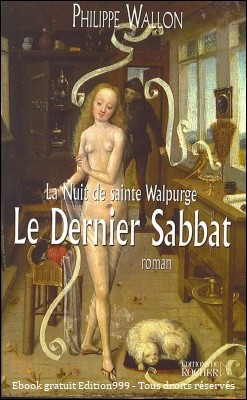

Le Dernier Sabbat
L’aventure débute à Montréal, de nos jours. Henri de Voragine rencontre Adeline Bisclavret, qu’il ne connaissait pas. Ils éprouvent aussitôt une impression de « déjà vu » et sont transportés dans une vision, trois siècles auparavant dans une auberge près du Brocken, le mont Chauve où l’on célèbre la Walpurgis Nacht, la fête des sorcières. Adeline pénètre les mystères de ce Dernier Sabbat, qui se serait tenu le 30 avril 1667 et où elle aurait rencontré le Diable. Elle n’en croit rien. Sauf qu’à leur table, à Montréal, s’installe un curieux visiteur, qui n’est autre que…
Cette histoire m’a été donnée. Très surpris, j’appelle un collègue, historien, spécialiste, qui me dit : « Va voir sur place. Tu vas entrer dans le monde du rêve, tu dois traverser une rivière. Comme tu vas rencontrer le Diable, tu dois aller toujours à gauche. » J’ai pris mon courage à deux mains et, un jour d’un mois d’août, je suis allé à Bad Lauterberg, nom actuel de la ville de mon histoire. J’ai retrouvé l’auberge où Henri et Adeline s’étaient rencontrés, il y a trois cents ans… Tout y était, même les bois qui tenaient les cloisons à l’époque. J’y étais donc bien venu, moi aussi, ce 30 avril, lors du Dernier Sabbat. Revenant à ma voiture, je découvre que j’avais franchi une rivière et j’avais tourné à gauche.
Covid 19
L’épidémie au Covid-19 s’avère être une catastrophe mondiale, non pas au niveau des effets du virus, si négligeables qu’ils ne devraient pas vraiment influer les statistiques de mortalité, mais par les confinements décidés partout sur la planète et qui a touché 81 % de la population active mondiale, soit 2,7 milliards de personnes. Comment est-on arrivé à faire un drame planétaire d’une maladie bénigne ? Sans évaluation du bénéfice-risque, la plupart des pays du monde ont décrété l’arrêt de toute activité économique.
Or la moyenne d’âge des personnes décédées de Covid-19 dans les pays développés est d’environ 83 ans.
À cet âge, on ne travaille plus (en général). La mortalité est équivalente, que le pays soit confiné ou pas, ce qui ne fait que confirmer le passé, depuis l’épidémie H1N1, où on l’avait déjà constaté
Le Dernier Sabbat
L’aventure débute à Montréal, de nos jours. Henri de Voragine rencontre Adeline Bisclavret, qu’il ne connaissait pas. Ils éprouvent aussitôt une impression de « déjà vu » et sont transportés dans une vision, trois siècles auparavant dans une auberge près du Brocken, le mont Chauve où l’on célèbre la Walpurgis Nacht, la fête des sorcières. Adeline pénètre les mystères de ce Dernier Sabbat, qui se serait tenu le 30 avril 1667 et où elle aurait rencontré le Diable. Elle n’en croit rien. Sauf qu’à leur table, à Montréal, s’installe un curieux visiteur, qui n’est autre que…
Cette histoire m’a été donnée. Très surpris, j’appelle un collègue, historien, spécialiste, qui me dit : « Va voir sur place. Tu vas entrer dans le monde du rêve, tu dois traverser une rivière. Comme tu vas rencontrer le Diable, tu dois aller toujours à gauche. » J’ai pris mon courage à deux mains et, un jour d’un mois d’août, je suis allé à Bad Lauterberg, nom actuel de la ville de mon histoire. J’ai retrouvé l’auberge où Henri et Adeline s’étaient rencontrés, il y a trois cents ans… Tout y était, même les bois qui tenaient les cloisons à l’époque. J’y étais donc bien venu, moi aussi, ce 30 avril, lors du Dernier Sabbat. Revenant à ma voiture, je découvre que j’avais franchi une rivière et j’avais tourné à gauche.
Covid 19
L’épidémie au Covid-19 s’avère être une catastrophe mondiale, non pas au niveau des effets du virus, si négligeables qu’ils ne devraient pas vraiment influer les statistiques de mortalité, mais par les confinements décidés partout sur la planète et qui a touché 81 % de la population active mondiale, soit 2,7 milliards de personnes. Comment est-on arrivé à faire un drame planétaire d’une maladie bénigne ? Sans évaluation du bénéfice-risque, la plupart des pays du monde ont décrété l’arrêt de toute activité économique.
Or la moyenne d’âge des personnes décédées de Covid-19 dans les pays développés est d’environ 83 ans.
À cet âge, on ne travaille plus (en général). La mortalité est équivalente, que le pays soit confiné ou pas, ce qui ne fait que confirmer le passé, depuis l’épidémie H1N1, où on l’avait déjà constaté

Une nouvelle version retravaillée est disponible dès maintenant. Merci à l’auteure. Jean-Michel
Répondre à cette critique